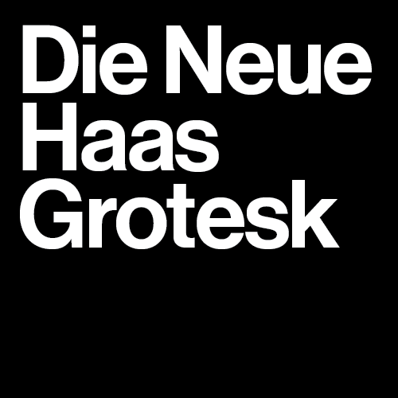

When walking the streets of any city, the roads are littered with text whether its directions, company signs, posters, newspapers, and so many other things. Different typefaces conquer the roads to evoke different emotions that the companies want to portray but one face conquers most. In the 1910s and 20s, the world embraced mdernist styles. Simplicity and readability became key to design and neo-gtotesque sans serifs became all the rage. As time went on, designers wanted to simplify and create new typefaces that were peak readability, and this led to the creation of
Helvetica was developed in 1957 by Swiss designers Max Miedinger and Eduard Hoffman. It started with Hoffmann's want to modernize and clean up Akzidenz Grotesk and he employed Miedinger to do all of the drawings. It was developed by the Haas Type Foundry of Munchenstein, Switzerland with the intention of matching the trend of the sans serif 'grotesque' typefaces amongst European graphic designers. Hoffmann was the president of the Haas Type Foundry, while Miedinger was a freelance graphic designer who had formly worked as a Haas salesman and designer. Their goal was to create a typeface that was neutral and had great clarity with no intrinsic meanings in its form. They wanted to create something that could be used in a wide variety of sinage and media in the print scene. Hence they created
Neue Haas Grotesk was brough onto the scene as a simple, universal, neutral grotesque typeface. Shortyly after its release, Linotype decided that Neue Haas Grotesk wasn't a good name for the typeface if they wanted to promote it internationally. Then came forth Helvetica. Helvetica was based off of the Latin word for 'Swiss", Helvetia. Stempl(linotype) had just wanted to name the typeface Helvetia alone, naming it after Switzerland and what Swiss design was. But Hoffman wasn't a fan of naming the typeface after a country, hence the name Helvetica; "The Swiss Typeface". Neue Haas Grotesk was a short lived name for Helvetica but it is what started the apocolypse of san serif type taking over the corporate market brand.
